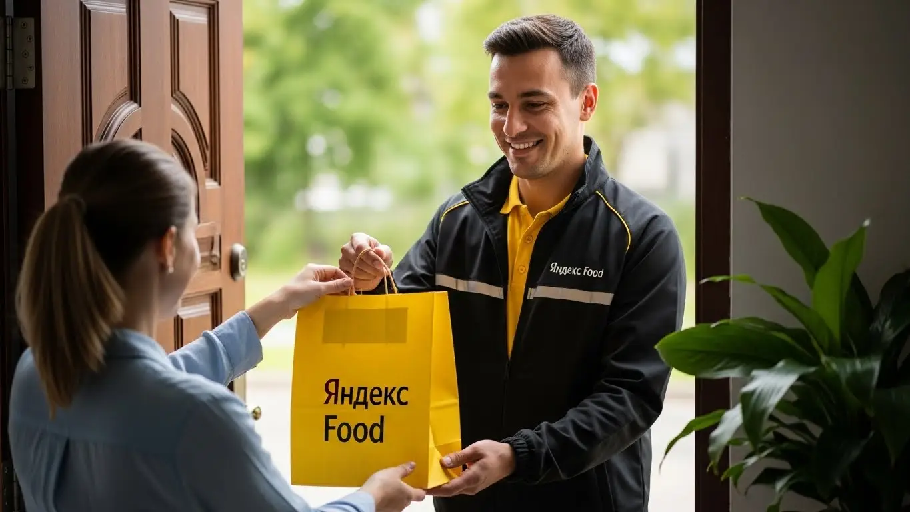
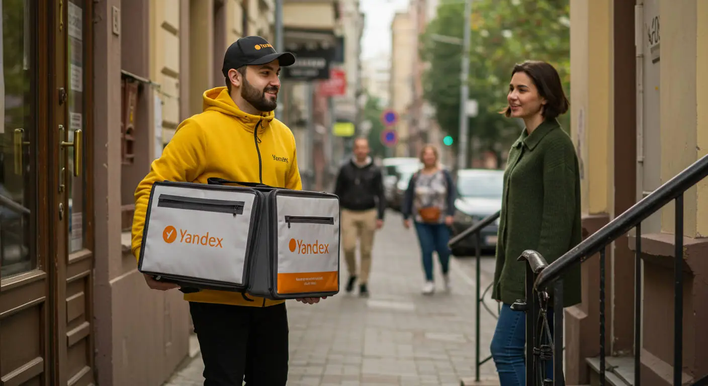
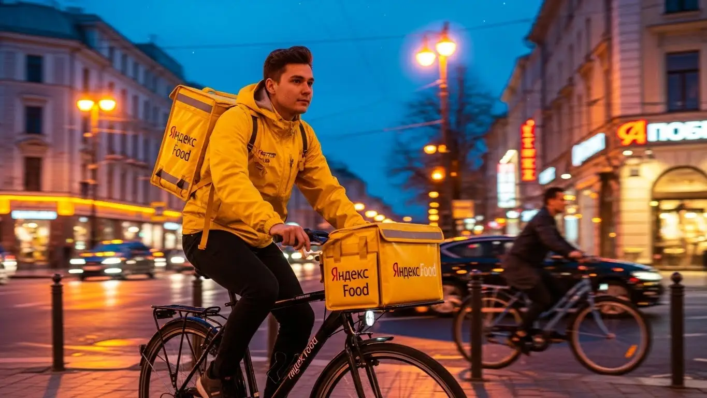
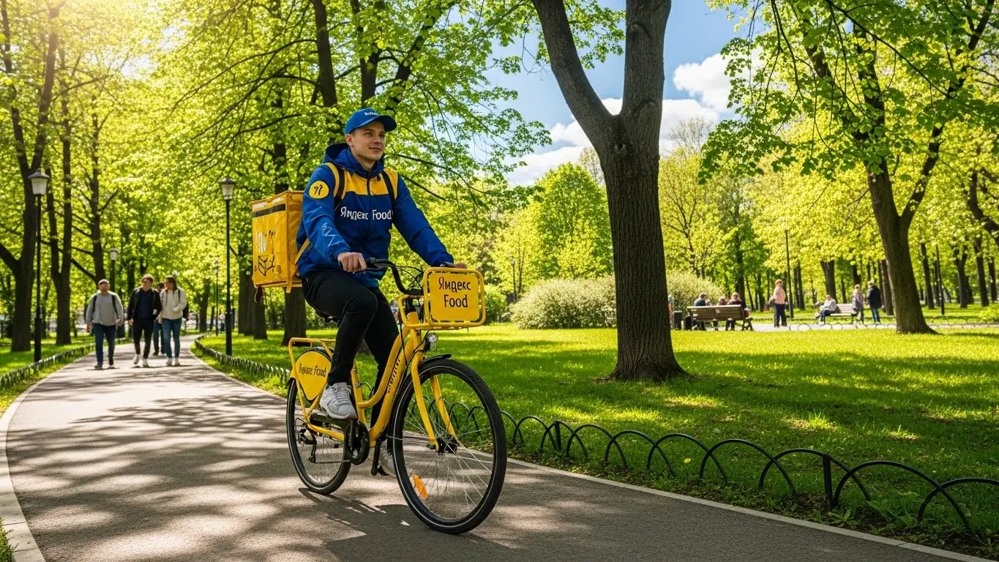

Работа курьером Яндекс Еды в Чехове: доход и условия в 2025-2026
- Работа курьером Яндекс Еды в Чехове: для кого эта вакансия и что вы получите
- Сколько вы будете зарабатывать курьером в Чехове: калькулятор дохода и разбор выплат
- Реальный заработок курьера в Чехове: смены и месячный доход
- График работы и форматы занятости
- Требования к кандидату и документы
- Самозанятость, налоги и юридическая чистота
- Пошаговое оформление и первый выход на линию в Чехове
- Пешком, на вело или на авто: что выгоднее в Чехове
- Районы, маршруты и «топовые» зоны заказов в Чехове
- Безопасность, страховка, штрафы и оплата простоя
- Плюсы и возможные минусы работы курьером в Чехове
- Реальные истории и отзывы курьеров из Чехова
- Ответы на главные вопросы о работе курьером Яндекс Еды в Чехове
- Короткие ответы на главные вопросы
- Итоги и ваш следующий шаг
Все города
Здорово, земляк! Думаешь крутить педали или баранку по Чехову в жёлтой куртке и зарабатывать лёгкие деньги? Погоди, не спеши. Наверняка в голове крутятся мысли: «А вдруг я не вылезу из 30 тысяч в месяц?», «Убью подвеску на наших дорогах или сотру велик за пару сезонов?», «Что делать, если застряну в вечной пробке на Симферопольке у въезда в город?». Давай без рекламной лапши разберемся, что на самом деле представляет собой работа курьером Яндекс Еды именно в нашем Чехове.
Потому что Чехов — не Москва. Здесь свои «зоны повышенного спроса», свои часы пик и свои «мёртвые» районы, где заказ можно ждать вечность. Большинство новичков смотрят на красивые цифры в рекламе, а потом в первый же месяц сталкиваются с реальностью: расходы на бензин или ремонт велосипеда съедают часть дохода, налог для самозанятых никто не отменял, а рейтинг падает из-за одного опоздания в частный сектор где-нибудь в Венюково, где навигатор сходит с ума. Чтобы сразу оценить условия и подать заявку, можно посмотреть официальную страницу, где подробно описана работа курьером Яндекс Еда в Чехове, — там есть калькулятор дохода и ответы на частые вопросы. Не зная этих мелочей, легко разочароваться и бросить.
В этом гиде мы всё разложим по фактам. Мы честно посчитаем, сколько чистыми остаётся в кармане после всех расходов. Я покажу на карте Чехова, где заказов больше всего, а куда лучше не соваться в час пик. Разберём, на чём выгоднее работать — пешком, на велосипеде или на авто, — с учётом наших расстояний и рельефа. Выясним, как погода и сезоны влияют на заработок, и как не нарваться на штраф, даже если ты прав. Никакой воды — только цифры и опыт.
Меня зовут Алексей. Я сам не один год откатал курьером по Чехову, а сейчас у меня свой небольшой таксопарк-партнёр. Так что я знаю эту кухню с обеих сторон — и как простой исполнитель, и как тот, кто подключает ребят к системе. Я видел сотни ошибок, которые стоят новичкам денег и нервов. В общем, хватит болтовни. Давай по порядку, сейчас всё разложу по полочкам.
Чтобы тебе было проще сориентироваться во всех нюансах, мы подготовили короткий навигатор по ключевым темам статьи.
Главное по полочкам: что нужно знать о работе курьером в Чехове
В этой статье ты ТОЧНО узнаешь:
- Сколько реально остаётся в кармане за смену в Чехове после вычета расходов на бензин?
- В каких районах Чехова больше всего заказов, а где лучше не ждать высокого спроса?
- Что выгоднее в Чехове — ходить пешком, крутить педали или работать на авто, и как это влияет на доход?
- За что на самом деле штрафуют в Яндекс Еде и как избежать падения рейтинга, чтобы не остаться без заказов?
- Как ловить «фиолетовые зоны» и работать в пиковые часы, чтобы за 4 часа заработать как за целый день?
- Насколько сложно оформить самозанятость и как платить налоги, чтобы всё было легально и без головной боли?
А если тебе некогда читать всю статью — переходи сразу к заключению, где ты найдёшь короткие ответы на все эти вопросы и указания, в каких разделах искать подробности.
А вот основные цифры и факты о работе курьером в Чехове в одной картинке.
Работа курьером в Чехове: ключевые цифры
Доход в час
350–500 ₽
В пиковые часы с учетом бонусов и коэффициентов
Заработок за смену
2800–3800 ₽
Средний доход за полный 8-10 часовой слот
Расходы за смену
~250 ₽
На связь, питание и мелкие нужды (для вело/пеших)
Заказы с чаевыми
~20%
Примерно каждый 5-й заказ приносит дополнительный доход
Работа курьером Яндекс Еды в Чехове: для кого эта вакансия и что вы получите
Кому подойдёт эта работа в Чехове
Давай начистоту: эта работа не для всех, но для многих она — настоящая находка. В первую очередь, это отличный вариант для студентов. График можно подстроить под учёбу, а ежедневные выплаты всегда актуальны. Если у тебя нет опыта работы — это не проблема, здесь всему научат с нуля, никаких резюме и долгих собеседований.
Также это идеальная подработка для тех, у кого уже есть основная работа. Можешь выходить на пару часов вечером или на полдня в выходные, чтобы закрыть кредит или накопить на что-то нужное. Водители, которые устали от такси, тоже найдут здесь своё, став водителем-курьером: заказы есть всегда, а возить нужно не людей, а пакеты. И, конечно, это работа для всех, кому важна свобода — ты сам себе начальник, сам решаешь, когда и сколько работать.
Главные преимущества для жителей районов Губернский, Олимпийский, Венюково
Одно из главных удобств работы в Чехове — возможность доставлять заказы прямо у себя под окнами. Если ты живёшь, например, в микрорайоне Губернский, Олимпийский или Венюково, тебе не придётся каждое утро ехать через весь город в какой-то офис. Ты просто выходишь из подъезда, включаешь приложение «Яндекс Про» и начинаешь работать.
Это экономит кучу времени и денег на дорогу. В этих районах полно и жилых домов, и заведений, откуда можно возить заказы Яндекс Еды из ресторанов или Яндекс Доставки из магазинов. Ты быстро выучишь все короткие пути, дворы и подъезды, что напрямую скажется на скорости и, соответственно, на доходе. Работать в знакомой обстановке всегда проще и спокойнее, особенно на старте.
Краткое обещание по доходу и условиям
Если говорить о деньгах, то в Чехове при активной работе можно рассчитывать на 2500–4000 рублей за смену. При полной занятости это выливается в 50 000–85 000 рублей в месяц, а то и больше, если работать с умом. Главное — выплаты приходят на карту ежедневно, не нужно ждать конца месяца.
Условия максимально простые: свободный график, который ты сам составляешь в приложении, и отсутствие требований к опыту. Для получения выплат нужно оформить самозанятость, но это делается онлайн за 10 минут. Всё, что тебе нужно, — это смартфон, желание двигаться и зарабатывать. Специальную форму и термокороб обычно выдают партнёры сервиса. Никаких начальников над душой и жёстких рамок. Ты сам решаешь, будет это лёгкая подработка на пару часов или полноценная работа с хорошим доходом.
Из практики: у меня есть знакомый студент из Чехова, живёт в Венюково. Он выходит на велосипеде на 3–4 часа после пар, катает в основном по своему району. За вечер спокойно делает 1500–2000 рублей. Говорит, что это покрывает все его расходы на жизнь и развлечения, и при этом не мешает учёбе.
Краткий вывод: Работа курьером в Чехове — это гибкий и доступный способ подработки или основного заработка, который подходит студентам, людям в поиске дополнительного дохода и тем, кто ценит свободу. Главный совет: начинай работать в своём районе — так ты быстрее освоишься и начнёшь стабильно зарабатывать, не тратя время и силы на поездки по городу.
Сколько вы будете зарабатывать курьером в Чехове: калькулятор дохода и разбор выплат
Из чего складывается доход курьера
Твой заработок — это не какая-то фиксированная ставка, а конструктор из нескольких частей. Во-первых, это базовая оплата за каждый выполненный заказ, которая включает подачу в ресторан или магазин и доставку клиенту. Во-вторых, идёт доплата за расстояние: чем дальше везти, тем больше денег ты получишь. Система всё считает автоматически по карте.
Кроме этого, есть повышающие коэффициенты. В часы пик (обед, ужин), в плохую погоду или в районах с высоким спросом стоимость заказов умножается на определённый коэффициент. Это самые прибыльные часы. Также не забывай про бонусы за выполнение персональных целей (например, сделать определённое количество заказов за неделю) и чаевые от клиентов — они полностью твои. Важный момент: сервис платит за простой, если ты приехал в ресторан, а заказ ещё не готов. А для дальних заказов может быть компенсация проезда.
Как пользоваться калькулятором дохода
На странице с вакансией обычно есть калькулятор — это удобный инструмент для примерной оценки заработка. Пользоваться им элементарно. Сначала выбираешь свой тип доставки: будешь пешим курьером, велокурьером или курьером на личном автомобиле. От этого напрямую зависит, сколько заказов ты сможешь выполнить. Затем указываешь, сколько часов в день и сколько дней в неделю планируешь выходить на линию. На основе этих данных система покажет тебе примерный диапазон твоего дневного и месячного дохода в Чехове. Конечно, это прогноз, но он даёт вполне реалистичное представление о том, на какие цифры можно ориентироваться.
Прикинь свой доход курьером в Чехове
Примерный доход в месяц:
85 000 ₽
Примерно 3 400 ₽ в день
Это примерный расчёт на основе средней ставки в Чехове. Реальный доход зависит от спроса, бонусов и вашего способа передвижения.
Чтобы увидеть более точные цифры для Чехова, а также ознакомиться с полными условиями и подать заявку, загляни на официальную страницу: работа курьером Яндекс Еда в твоём городе. Там же найдёшь ответы на дополнительные вопросы и сможешь сразу заполнить анкету.
Примеры расчёта для пешего, вело- и авто‑курьера в Чехове
Чтобы было понятнее, давай разберём на конкретных примерах для Чехова.
- Пеший курьер. Идеально для центра города, где много заказов на короткие расстояния. Вышел на 4 часа в обеденное время, выполнил 6–8 заказов. Заработок составит примерно 1200–1800 рублей.
- Велокурьер. Работает вечером, 5–6 часов, катает между спальными районами, например, из Губернского в Олимпийский. За счёт скорости выполняет 10–12 заказов на средние дистанции. Его доход за смену — около 2200–3000 рублей.
- Курьер на автомобиле (автокурьер). Выходит на полную смену 8–10 часов, особенно в выходной или в плохую погоду. Берёт заказы по всему городу и даже в ближайший пригород. Может выполнить 15–20+ заказов, включая крупные и дорогие. Заработок за такой день может достигать 4000–5500 рублей и выше.
Из практики: один из моих водителей, который перешёл из такси в доставку, работает на своей машине в Чехове. Он специально берёт длинные смены по выходным, когда люди массово заказывают еду и продукты. В прошлую дождливую субботу он включил приложение «Яндекс Про», увидел зоны с высоким спросом и за 10 часов работы сделал больше 5000 рублей чистыми, потому что коэффициенты были максимальные, а конкуренции — минимум.
Краткий вывод: Твой доход напрямую зависит от способа передвижения, времени и места работы. Это не фиксированная зарплата, а результат твоей активности. Мой совет: активно используй карту спроса в приложении «Яндекс Про», чтобы видеть зоны с повышенными коэффициентами, и не бойся работать в «непопулярное» время — именно тогда можно заработать больше всего.
Реальный заработок курьера в Чехове: смены и месячный доход
Давай сразу к главному — к деньгам. Цифры, которые я назову, — это не рекламные обещания, а реальная практика для курьеров Яндекс Еды в Чехове. Твой итоговый доход всегда будет зависеть от трёх вещей: сколько часов ты на линии, на чём передвигаешься и насколько грамотно работаешь с приложением и картой города. Универсальной зарплаты нет, но есть понятные диапазоны, на которые можно ориентироваться.
Диапазон дохода для подработки и полной занятости
Если ты ищешь подработку на несколько часов в день, чтобы закрыть кредит или просто иметь карманные деньги, цифры будут одни. Если же готов работать полный день, как на основной работе, — совсем другие.
Для подработки (2–4 часа в день, обычно в вечерние пики или на выходных) в Чехове можно рассчитывать на следующее:
- Пеший курьер: Идеально для центра, где много заказов в шаговой доступности. За короткую смену в 2–3 часа выходит в среднем 800–1500 рублей. В месяц это даёт 15 000 – 25 000 рублей, если работать регулярно.
- Велокурьер: Ты быстрее, а значит, выполняешь больше заказов. За 3–4 часа можно сделать 1200–2000 рублей. В месяц набегает уже 20 000 – 35 000 рублей.
- Автокурьер: Самый высокий потенциал, особенно если брать дальние заказы или работать в плохую погоду. За 3–4 часа чистыми (уже за вычетом бензина) выходит 1500–2500 рублей. В месяц это 25 000 – 45 000 рублей дополнительного дохода.

При полной занятости (8–10 часов в день, 5-6 дней в неделю) доход, естественно, выше:
- Пеший курьер: Физически тяжело, но реально. В день можно заработать 2500–3500 рублей. Месячный доход составит 50 000 – 70 000 рублей.
- Велокурьер: Оптимальный вариант для Чехова. Дневной заработок — 3000–4500 рублей. В месяц получается 60 000 – 90 000 рублей.
- Автокурьер: Максимальный доход. В день можно делать 4000–6000 рублей и больше, особенно с бонусами. В месяц это 80 000 – 120 000 рублей, а у самых активных и опытных ребят выходит и больше.
Как район, время суток и погода влияют на доход
Запомни простое правило: твой доход — это не только отработанные часы, но и умение оказаться в нужном месте в нужное время. В Чехове, как и везде, есть свои «рыбные» места и часы. Максимальный спрос, а значит и самые высокие коэффициенты, всегда в обед (с 12:00 до 15:00) и вечером (с 18:00 до 22:00). Пятница, суббота и воскресенье — это практически один большой пик.
Погода — твой лучший друг в плане заработка. Как только начинается дождь, снегопад или сильная жара, количество заказов резко растёт, а число курьеров на линии падает. Система тут же включает повышенные коэффициенты, чтобы мотивировать тех, кто готов работать. В такие дни можно за 3-4 часа заработать как за целый обычный день. Плюс, в плохую погоду клиенты чаще оставляют хорошие чаевые — ценят, что ты доставил им горячую еду, пока они сидят в тепле и сухости. Что касается районов, то в Чехове самые активные зоны — это центр в районе улиц Московская и Чехова, а также крупные жилые комплексы вроде «Губернского» и «Олимпийского», где много и ресторанов, и клиентов.
Советы по увеличению заработка от опытных курьеров
Чтобы зарабатывать больше, не обязательно работать сутками. Важнее работать с головой. Во-первых, всегда следи за картой спроса в приложении «Яндекс Про». Видишь фиолетовую или красную зону — двигайся туда, там сейчас самые дорогие заказы. Не стоит гоняться за одним заказом через весь город, лучше стабильно работать в зоне с постоянным высоким спросом.
Во-вторых, активно используй плановые слоты. Они часто идут с бонусами и гарантированным минимальным доходом. Это твоя страховка на случай, если заказов будет мало. В-третьих, будь эффективным. Не жди заказ у одного ресторана, перемещайся между несколькими точками. Изучи короткие пути, дворы, где можно срезать. И, конечно, будь вежлив с клиентами и персоналом заведений. Хороший рейтинг, чистая термосумка и положительные отзывы напрямую влияют на то, какие заказы тебе будет предлагать система.
Вот недавний пример из практики. Парень на велосипеде решил неделю поработать на максимум в Яндекс Еде. Он брал слоты в обед и вечером, катался в основном по центру и в районе ТРЦ «Карнавал». Когда два дня лил дождь, он не спрятался дома, а наоборот, вышел на линию. В итоге за эти два «мокрых» дня он сделал почти половину недельного заработка. За семь дней у него вышло около 25 000 рублей чистыми. Его главный вывод: плохая погода — это не проблема, а возможность.
Сравнение дохода курьера в Чехове по форматам
| Параметр | Пеший курьер | Велокурьер | Автокурьер |
|---|---|---|---|
| Доход за подработку (3-4 часа) | 800 – 1500 ₽ | 1200 – 2000 ₽ | 1500 – 2500 ₽ |
| Доход за полный день (8-10 часов) | 2500 – 3500 ₽ | 3000 – 4500 ₽ | 4000 – 6000+ ₽ |
| Примерный месячный доход (полная занятость) | 50 000 – 70 000 ₽ | 60 000 – 90 000 ₽ | 80 000 – 120 000 ₽ |
В сухом остатке: работа курьером в Чехове позволяет получать достойный доход, который напрямую зависит от выбранного транспорта и умения ловить моменты высокого спроса. Автокурьеры зарабатывают больше всех, но и у пеших с велосипедистами есть возможность получать хорошие деньги. Мой совет: не бойся плохой погоды и всегда планируй смены на пиковые часы — именно тогда делается основная зарплата.
График работы и форматы занятости
Главный плюс этой работы — свободный график. Ты сам себе начальник и сам решаешь, когда выходить на линию, а когда отдыхать. Никто не будет стоять над душой и требовать отсиживать часы. Это идеальный вариант, если тебе нужна подработка, которую легко совмещать с учёбой, основной работой или личными делами. Или если ты просто не любишь жёсткие рамки офисного графика.
Подработка после учёбы или основной работы
Совмещать доставку с чем-то ещё — проще простого. Вот пара реальных примеров из Чехова, как это делают ребята. Первый — студент местного техникума. Он выходит на линию на велосипеде после пар, примерно с 18:00 до 22:00, плюс работает почти весь день в субботу. За будний вечер у него выходит 1300–1800 рублей, за субботу — до 4000. В неделю набегает 10–12 тысяч, что для студента отличные деньги.
Второй пример — мужчина, который работает на заводе по графику 2/2. В свои выходные он садится в машину и катает заказы с 11 утра до позднего вечера, делая перерыв днём. Он специализируется на крупных заказах из гипермаркетов через Яндекс Доставку и развозит их в ближайшие посёлки, куда пешком не дойдёшь. Такая подработка приносит ему 30 000 – 40 000 рублей в месяц, что сопоставимо с его основной зарплатой. Он говорит, что так быстрее закрывает ипотеку. Как видишь, сценариев много, и ты можешь выстроить любой удобный для себя.

Полная занятость: как выглядит типичный день курьера
Если ты решил сделать доставку своей основной работой, твой день будет более структурированным. Обычно он выглядит так. Утром, часов в 9-10, выходишь на линию. Начинаешь с жилых районов, например, Венюково, — оттуда идут утренние заказы из магазинов и кофеен. Ближе к 11:30 перемещаешься в центр, к скоплению кафе и ресторанов на Московской, чтобы быть готовым к обеденному пику.
С 12:00 до 15:00 — самое жаркое время. Заказы из Яндекс Еды идут один за другим, времени на передышку почти нет. После 15:00 наступает затишье. Это лучшее время, чтобы спокойно пообедать, отдохнуть, заправить машину. Часа в 4 дня можно снова выходить на линию, а с 18:00 начинается вечерний пик, который длится до 21:00-22:00. Это вторая волна самых выгодных заказов. После 10 вечера спрос падает, и можно спокойно завершать смену, посмотрев в приложении свой дневной доход, который благодаря ежедневным выплатам можно сразу перевести на карту.
Как планировать слоты и выходы через приложение «Яндекс Про»
Вся твоя работа управляется через приложение «Яндекс Про» — это твой единый центр управления заказами из Яндекс Еды, Доставки и других сервисов. Там ты видишь карту города с зонами повышенного спроса, принимаешь заказы и отслеживаешь свой доход. График ты тоже планируешь там. Есть два варианта: свободный выход, когда ты просто нажимаешь кнопку «На линию» в любое время, и плановые слоты.
Я настоятельно рекомендую новичкам использовать плановые слоты. Ты заранее выбираешь в приложении район и время, в которое будешь работать. Часто за такие слоты сервис предлагает бонусы или гарантированный доход за смену. Это твоя подстраховка. Главное правило здесь — пунктуальность. На слот нельзя опаздывать. Если смена начинается в 12:00 в центральной зоне, ты должен быть в границах этой зоны ровно в 12:00. Регулярные опоздания бьют по твоему рейтингу, а от него зависит, как много хороших заказов ты будешь получать. Приезжай на место за 10-15 минут до начала, и всё будет в порядке.
В итоге, условия работы курьером — это конструктор, который ты собираешь сам под свои нужды через приложение. Хочешь — работай по 12 часов, хочешь — по 2. Главное — подходить к планированию с умом и быть дисциплинированным, особенно если выбираешь плановые слоты. Мой совет: начни с коротких слотов в пиковые часы, чтобы почувствовать ритм, а потом уже выстраивай свой идеальный график.
Требования к кандидату и документы
Многие думают, что для работы курьером нужно пройти семь кругов ада с бумажками и собеседованиями. На деле всё гораздо проще. Сервису нужны ответственные люди, готовые работать без опыта, а не собирать справки неделями. Давай по порядку разберём, какие условия и требования к кандидату есть на самом деле.
Возраст, гражданство и базовые условия
Главное и самое строгое требование — возраст. Работать курьером в Яндекс Еде можно строго с 18 лет. Никаких исключений, даже с согласия родителей, здесь не делают. Это связано с материальной ответственностью и правилами самого сервиса. По гражданству тоже всё чётко: нужен паспорт гражданина России или одной из стран ЕАЭС (это Беларусь, Казахстан, Армения, Кыргызстан).
Что касается физической формы, от тебя не ждут олимпийских рекордов. Будь готов проводить на ногах по несколько часов, ходить по лестницам и носить термокороб весом до 10–15 кг, если ты пеший курьер или велокурьер. Для курьера на автомобиле главное — уверенное вождение и знание города. В общем, если у тебя нет серьёзных медицинских противопоказаний к физической активности, ты справишься.
Какие документы нужны для работы курьером
Набор документов минимальный, и скорее всего, всё уже у тебя под рукой. Чтобы стать курьером, тебе понадобится всего три вещи для старта:
- Паспорт. Нужен для подтверждения твоей личности, возраста и гражданства. При регистрации его нужно будет сфотографировать.
- ИНН (Идентификационный номер налогоплательщика). Он необходим для оформления самозанятости и уплаты налогов. Если ты не помнишь свой номер, его можно за пару минут бесплатно узнать на сайте ФНС.
- Банковская карта. Любого российского банка, оформленная на твоё имя. Именно на неё будут приходить твои заработанные деньги, включая ежедневные выплаты.
Иногда для работы с определёнными ресторанами или магазинами может потребоваться медицинская книжка. Но это не повсеместное требование. Если она понадобится, тебе об этом сообщат на этапе подключения. Держать её в порядке — хороший тон, который может открыть доступ к большему числу заказов.

Можно ли работать с 16 лет и какие есть альтернативы
Давай честно и без иллюзий: устроиться в Яндекс Еду с 16 или 17 лет нельзя. Политика компании однозначна — только совершеннолетние. Это связано с полной материальной ответственностью за заказы и денежные средства, а также с юридическими тонкостями оформления партнёрских отношений.
Если тебе ещё нет 18, а работать хочется, не стоит отчаиваться. Рассмотри другие варианты подработки в Чехове, которые доступны подросткам. Например, часто ищут помощников в местные кофейни, можно устроиться на раздачу листовок или попробовать себя в роли помощника на летних верандах. Это тоже опыт и свои карманные деньги, а как только исполнится 18 — добро пожаловать в доставку.
Из практики: ко мне как-то пришёл устраиваться 19-летний парень, студент, только переехал в Чехов. Он думал, что сбор документов — это надолго. Я ему сказал: «Доставай телефон». Прямо при мне он сфотографировал паспорт, за две минуты нашёл на Госуслугах свой ИНН и ввёл реквизиты карты. Через час он уже проходил онлайн-обучение в приложении Яндекс Про. Вечером того же дня он мог бы выйти на свой первый слот. Вся «бюрократия» заняла меньше времени, чем обеденный перерыв.
В итоге: базовые условия работы курьером в Яндекс очень лояльные — возраст от 18 лет, гражданство РФ или ЕАЭС и наличие основных документов. Мой тебе совет: перед заполнением анкеты сразу подготовь паспорт и узнай свой ИНН, чтобы не отвлекаться на поиски и пройти регистрацию максимально быстро.
Самозанятость, налоги и юридическая чистота
Многих новичков пугают слова «самозанятость» и «налоги». Кажется, что это сложно, муторно и связано с походами в налоговую. На самом деле, это самый простой и прозрачный способ работать официально, который придумали специально для таких, как мы. Давай разложу по полочкам, как устроено оформление и уплата налога для самозанятых.
Почему курьеры Яндекс Еды работают как самозанятые
Курьер для Яндекса — это не наёмный сотрудник в классическом понимании, а партнёр-исполнитель. Ты сам решаешь, когда и сколько тебе работать, у тебя свободный график. Формат самозанятости (официально он называется «Налог на профессиональный доход» или НПД) идеально подходит для таких отношений.
Это даёт тебе несколько ключевых преимуществ. Во-первых, твой доход полностью официальный. Это значит, ты без проблем можешь взять кредит, подтвердить платёжеспособность для визы или просто спать спокойно. Во-вторых, нет никакой сложной бухгалтерии, отчётов и деклараций. Всё происходит автоматически через приложение Яндекс Про. В-третьих, это легально. Ты работаешь вбелую, платишь небольшой налог и защищён законом.
Как за 10 минут оформить самозанятость через «Мой налог»
Забудь про очереди в налоговой. Статус самозанятого оформляется онлайн, с телефона, и занимает от силы 10 минут. Вот простая пошаговая схема:
- Скачай официальное приложение ФНС «Мой налог» в Google Play или App Store.
- Открой приложение и выбери способ регистрации. Самый быстрый — «По паспорту РФ».
- Отсканируй камерой телефона главный разворот паспорта. Приложение само распознает все данные.
- Сделай селфи на камеру телефона. Система сравнит фото с фотографией в паспорте, чтобы убедиться, что это ты.
- Подтверди номер телефона и выбери регион деятельности — Московская область.
Вот и всё. Никаких заявлений, госпошлин и ожидания. Через несколько минут тебе придёт уведомление, что ты зарегистрирован как плательщик НПД. С этого момента ты можешь легально получать доход от Яндекса.
Сколько и как платить налоги
Здесь тоже всё максимально упрощено. Ставка налога для самозанятого, работающего с юридическими лицами (а Яндекс — это юрлицо), составляет 6% от твоего дохода. Никаких других отчислений, взносов или скрытых платежей нет. Если за месяц ты ничего не заработал, то и налог платить не нужно.
Процесс уплаты налога полностью автоматизирован. Яндекс сам передаёт данные о твоих доходах в налоговую службу. В начале каждого месяца (до 12-го числа) в приложении «Мой налог» появляется сумма налога за предыдущий месяц. Тебе остаётся только нажать кнопку «Оплатить» и подтвердить платёж с привязанной банковской карты. Сделать это нужно до 28-го числа. Это в разы проще и безопаснее, чем работать неофициально и постоянно рисковать нарваться на штрафы.
Из практики: у меня в парке есть водитель, который лет десять работал «в серую». Когда мы переходили на работу с агрегаторами, он больше всех возмущался из-за самозанятости, боялся налогов и проверок. Я лично помог ему зарегистрироваться. Через полгода он пришёл и сказал спасибо. Оказалось, ему понадобился потребительский кредит на ремонт в квартире. Он просто скачал справку о доходах из приложения «Мой налог», и банк без вопросов одобрил ему нужную сумму. Он осознал, что официальный доход — это не страшно, а наоборот, удобно и открывает новые возможности.
В итоге: самозанятость — это не проблема, а удобный инструмент для легальной работы. Оформление занимает 10 минут, налог для самозанятых низкий и рассчитывается автоматически. Мой совет: не бойся этого формата. Установи приложение «Мой налог» и сразу привяжи карту для оплаты — так ты точно не пропустишь срок платежа и будешь работать абсолютно спокойно.
Пошаговое оформление и первый выход на линию в Чехове
Многих, кто ищет подработку, пугает бумажная волокита и долгие собеседования, но в Яндекс Еде всё иначе. Весь процесс от заявки до первого заработка построен так, чтобы ты не терял время. Большинство шагов проходишь онлайн, никуда ездить не нужно — это одно из главных условий работы. Система простая и понятная, рассчитана на то, чтобы ты мог стать курьером и выйти на линию буквально на следующий день, даже без опыта.
Шаг 1–2: анкета и онлайн‑обучение
Сначала ты заполняешь простую анкету на сайте. Никаких эссе на тему «почему я хочу стать курьером». Нужны только базовые данные (ФИО, номер телефона, гражданство) и готовность оформить самозанятость для получения выплат. Это занимает минут 10–15, не больше. После этого твои данные проходят быструю проверку, и на телефон приходит ссылка на короткое онлайн‑обучение.
Обучение — это не нудные лекции. Тебе в формате коротких видео или слайдов покажут, как пользоваться приложением «Яндекс Про», какие есть стандарты сервиса и как действовать в разных ситуациях на доставке. В конце будет небольшой тест из нескольких вопросов, чтобы убедиться, что ты всё понял. Проходишь его — и считай, полдела сделано. Весь этот этап можно завершить за час, сидя дома на диване.

Шаг 3: получение сумки и доступа к заказам в Чехове
После успешного теста тебе нужно получить главный рабочий инструмент — фирменный термокороб. Без него система не даст доступ к заказам Яндекс Еды из ресторанов и Яндекс Доставки из магазинов. В Чехове сумку можно забрать в партнёрских пунктах выдачи. Не нужно гадать, куда ехать — в приложении «Яндекс Про» появятся все доступные адреса.
Просто выбираешь ближайшую к тебе точку, приезжаешь и забираешь. Иногда партнёры могут предложить и доставку экипировки. Как только ты получишь термосумку и отметишь это в приложении, тебе откроется полный доступ к заказам в твоём городе. Этот шаг — последний барьер перед реальной работой и первыми выплатами.
Шаг 4: первый слот и первый доход
Теперь всё в твоих руках. Открываешь «Яндекс Про», смотришь на карту Чехова и выбираешь свой первый слот — это запланированный отрезок времени, когда ты будешь выполнять заказы. Это и есть тот самый свободный график: работаешь, когда удобно. Мой совет: для первого раза выбери знакомый тебе район, например, тот, где живёшь. Так будет спокойнее, не придётся плутать в поисках нужного адреса.
Выбираешь слот, подтверждаешь, выходишь на улицу в указанное время и нажимаешь в приложении кнопку «На линии». Система сразу начнёт подбирать для тебя ближайшие заказы. Выполнил один, второй — и вот уже на твоём балансе появились первые деньги. Кстати, одно из преимуществ — ежедневные выплаты, так что долго ждать заработка не придётся. Начать можно в тот же день, как получил сумку, или на следующий. Никаких «двух недель стажировки» — всё по-настояшему с первого часа.
Из практики: парень из моего таксопарка, студент, решил подработать курьером. В понедельник утром заполнил анкету, к обеду прошёл обучение. После пар заехал в офис партнёра на улице Московской, забрал термокороб. А уже во вторник взял слот на 4 часа в своём микрорайоне «Губернский». Спокойно развёз 6 заказов и к вечеру увидел на балансе первые 1600 рублей. Говорит, был удивлён, насколько всё быстро.
В общем, как устроиться на работу курьером в Яндекс, теперь понятно: процесс максимально упрощён. Главное — твоё желание. Прошёл четыре простых шага — анкета, обучение, получение сумки, выбор слота — и ты уже зарабатываешь. Мой совет: не тяни с получением термокороба. Чем быстрее заберёшь, тем быстрее начнут поступать деньги на баланс.
Пешком, на вело или на авто: что выгоднее в Чехове
Выбор транспорта — ключевой момент, от которого напрямую зависит твой доход и комфорт. То, сколько зарабатывает курьер в Чехове, во многом определяется именно этим. В отличие от Москвы, здесь нет метро и гигантских расстояний, но своя специфика есть. Где-то лучше пройтись пешком, где-то пролететь на велосипеде, а для дальних точек без машины никуда. Давай разберёмся, что подходит именно тебе.
Пеший курьер: для центра и плотной застройки в Чехове
Если у тебя нет машины или велосипеда, или ты просто хочешь совмещать работу с прогулкой, формат пешего курьера — отличный старт. Он идеален для центральной части Чехова. В районе Советской площади, улиц Первомайской и Чехова сосредоточено много кафе, ресторанов и магазинов, а заказы часто поступают в соседние дома. Здесь короткие расстояния, и ты не будешь тратить время на поиск парковки.
Пеший курьер берёт заказами «накоротке». Ты можешь взять слот на 3–4 часа, поработать в центре и заработать на карманные расходы. Это хороший вариант для студентов или как подработка в обеденный перерыв. Физическая нагрузка умеренная, а в хорошую погоду — одно удовольствие. Главное — удобная обувь и пауэрбанк для телефона.
Велокурьер: быстрые доставки между спальными районами
Велосипед — это золотая середина и, на мой взгляд, один из самых эффективных видов транспорта для работы курьером в Чехове. Ты быстрее пешего, не зависишь от пробок, как автомобиль, и при этом получаешь неплохую кардионагрузку — своего рода «оплачиваемый фитнес». Курьер на велосипеде идеален для работы в крупных спальных районах.
Например, в микрорайонах «Губернский» или «Олимпийский» на велосипеде ты будешь королём. Там много новостроек, заказов хватает, а расстояния как раз такие, что пешком идти долго, а на машине — не всегда удобно из-за заставленных дворов. Велокурьер может за час выполнить 3–4 заказа там, где пеший успеет только 1–2. Это напрямую сказывается на итоговом доходе.
Водитель‑курьер: заказы по всему городу и пригороду Троицкое, Дубна, Манушкино
Автомобиль — это твой главный козырь, если ты нацелен на максимальный заработок. Курьер на автомобиле берёт самые дорогие заказы: большие доставки из гипермаркетов, несколько заказов одновременно, а главное — дальние маршруты. Работа на своем авто позволяет спокойно охватить весь Чехов и захватывать пригороды, например, возить заказы в такие посёлки, как Троицкое, Дубна, Манушкино, куда пешком или на велосипеде не добраться.
Особенно выгодно работать на авто в плохую погоду — дождь, снег, мороз. В это время количество пеших и велокурьеров на линии резко сокращается, а спрос на доставку взлетает до небес. Включаются повышенные коэффициенты, и за одну такую смену можно заработать как за два обычных дня. Да, есть расходы на бензин, но они с лихвой окупаются стоимостью заказов.
Сравнение форматов доставки в Чехове
| Параметр | Пеший курьер | Велокурьер | Водитель-курьер |
|---|---|---|---|
| Средний доход в час | 250–400 ₽ | 350–600 ₽ | 500–900 ₽+ |
| Радиус доставки | 1–2 км | 3–5 км | Весь город и пригород |
| Лучшие зоны в Чехове | Центр (ул. Первомайская, Советская пл.) | Спальные районы (мкр. Губернский, Олимпийский) | Весь город, дальние районы, пригороды |
| Плюсы | Нет расходов, фитнес, работа в центре | Скорость, маневренность, экономия | Высокий доход, комфорт, любые заказы |
| Минусы/Расходы | Низкая скорость, зависимость от погоды | Нужен велосипед, физическая нагрузка | Расходы на бензин и обслуживание авто |
Лично я, когда сам выхожу на линию, чаще всего использую машину. Помню, как-то в пятницу вечером ливанул дождь. Я взял слот на 6 часов, включил повышенный спрос на карте и просто ездил от заказа к заказу. Было много доставок в частный сектор и в соседние деревни. В итоге за вечер привёз домой больше 5000 рублей чистыми. На велосипеде в такой ливень я бы и половины не сделал.
Итак, выбор за тобой. Для старта и подработки в центре Чехова хватит и своих ног. Если хочешь быть быстрым и охватывать спальные районы — седлай велосипед. А если нацелен на максимальный и стабильный доход в любую погоду — без машины не обойтись. Условия работы курьером в Яндекс позволяют быть гибким: если есть возможность, комбинируй. В хорошую погоду можно и на велосипеде, а как только небо затянуло тучами — пересаживайся на авто. Гибкость — ключ к хорошему заработку.
Районы, маршруты и «топовые» зоны заказов в Чехове
Чтобы не кататься вхолостую, а стабильно зарабатывать, курьеру Яндекс Еды нужно понимать географию города. Чехов — город компактный, но со своими «рыбными местами», где заказов всегда больше. Знание этих зон — прямой путь к хорошему доходу, особенно для курьера на автомобиле, который может быстро перемещаться между районами.
Главное правило — не сидеть на месте в ожидании чуда. Если в твоей точке затишье, смотри на карту спроса в «Яндекс Про» и двигайся туда, где горит фиолетовый цвет. Даже пара километров в нужную сторону может кардинально изменить заработок за смену.
Где больше всего заказов: ТРЦ, бизнес-центры и жилые массивы
Самые выгодные зоны в Чехове, как и везде, — это точки притяжения людей. В первую очередь, это крупные торговые центры. Стабильный поток заказов идёт из ТРЦ «Карнавал» на Симферопольском шоссе и ТЦ «Карусель». Здесь сосредоточены фуд-корты, рестораны и магазины, поэтому в обеденное время и по вечерам тут всегда есть работа для курьера.
Второй по важности очаг — это центр города. Район вокруг Советской площади, улицы Московская и Чехова — это скопление кафе, пиццерий и суши-баров. В будни днём здесь много заказов из офисов, а по вечерам и в выходные — из жилых домов. Также не стоит сбрасывать со счетов район железнодорожной станции «Чехов» — оттуда часто заказывают еду и товары те, кто возвращается с работы из Москвы.
Работа в своём районе: примеры для популярных жилых кварталов
Многие думают, что для хорошего заработка нужно обязательно ехать в центр. Это не так. В Чехове можно отлично работать и в крупных спальных районах, экономя время и бензин. Например, микрорайон «Губернский» — это, по сути, город в городе. Здесь полно своих сетевых магазинов, пекарен и кафе, которые активно работают на доставку. Жители охотно заказывают и продукты, и готовую еду, особенно в плохую погоду.
То же самое касается микрорайона «Олимпийский» и старого района Венюково. Плотная жилая застройка гарантирует стабильный поток небольших, но быстрых заказов. Работая в своём районе, ты знаешь все дворы и подъезды, что даёт тебе преимущество в скорости. Это идеальный вариант для велокурьеров или пеших курьеров, а также для тех, кто ищет подработку на пару часов вечером недалеко от дома.
Как выбирать зоны и слоты в «Яндекс Про», чтобы не мотаться впустую
Приложение «Яндекс Про» — твой главный инструмент планирования. Основное, на что нужно смотреть, — это карта спроса. Зоны, подсвеченные фиолетовым и красным цветом, — это места, где заказов сейчас больше всего, а к оплате применяется повышающий коэффициент. Но гнаться за самым высоким «кэфом» не всегда разумно. Иногда лучше взять заказ с чуть меньшим коэффициентом, но с коротким маршрутом и в направлении следующей потенциальной зоны.
Планируй свой день заранее. Если берёшь плановый слот, ты получаешь приоритет в заказах и гарантию минимального дохода. Это одно из ключевых условий работы, которое обеспечивает стабильность. Лучшее время для работы — обеденные часы (с 12:00 до 15:00) и вечерние (с 18:00 до 21:00), а также все выходные и праздничные дни. Старайся выстраивать маршруты логично: например, взял заказ из центра в «Губернский», а оттуда уже развозишь по району, а не мчишься пустым обратно в центр.
Из практики: один из моих водителей-курьеров на своем авто в прошлую субботу взял 8-часовой слот. Начал в центре, дождался хорошего заказа из ресторана у ТРЦ «Карнавал» в новый жилой комплекс на улице Полиграфистов. После этого не поехал обратно, а остался работать в этом районе, где как раз начался вечерний спрос на доставку пиццы и продуктов. В итоге за смену он сделал 18 заказов, и его чистый доход составил около 4200 рублей, почти без холостых пробегов.
В общем, ключ к стабильному доходу в Чехове — это грамотное планирование и понимание, где и когда концентрируются заказы. Не сиди на месте, анализируй карту в приложении, и со временем ты будешь чувствовать город и его ритм. Мой совет: в первые недели попробуй поработать в разных районах, чтобы понять их специфику и выбрать те условия работы, что подходят именно тебе.
Безопасность, страховка, штрафы и оплата простоя
Работа курьером, как и любая работа «в полях», связана с определёнными рисками. Можно поскользнуться, попасть в неприятную ситуацию на дороге или просто столкнуться с недобросовестным клиентом. Важно понимать, что в Яндекс Еде ты не остаёшься с этими проблемами один на один. Сервис предоставляет инструменты защиты, но и от тебя требует соблюдения определённых правил.
Давай по-честному разберём, что тебя защищает, за что могут наказать и как не терять деньги из-за отсутствия заказов. Это не страшилки, а важные условия работы, которые нужно знать каждому, кто выходит на линию.
Бесплатная страховка на сменах и что она покрывает
Это один из самых важных моментов, о котором многие новички даже не знают. Пока ты находишься на активном плановом слоте и выполняешь заказ, твоя жизнь и здоровье застрахованы. Страхование абсолютно бесплатное, оно подключается автоматически для всех курьеров.
Что оно покрывает? В первую очередь, травмы, полученные в результате несчастного случая во время доставки. Например, если ты упал с велосипеда и сломал руку, или попал в ДТП на машине. Страховая выплата может покрыть расходы на лечение. Сумма покрытия доходит до 2 000 000 рублей, в зависимости от тяжести случая. Это серьёзная поддержка, которая даёт уверенность, что в сложной ситуации ты не останешься без помощи.
Правила безопасности на дороге и при доставке
Страховка — это хорошо, но лучше до страховых случаев не доводить. Элементарные правила безопасности сэкономят тебе нервы, здоровье и деньги. Для пеших курьеров главное — переходить дорогу по переходу и не утыкаться в телефон на ходу. Для велокурьеров — обязательны фонари и светоотражающие элементы в тёмное время суток, а в идеале — шлем.
Водителям-курьерам на своем авто советую не лихачить, даже если опаздываешь. Ремонт машины и штрафы съедят весь твой доход. Кроме того, аккуратность важна и с самим заказом. Закрепляй стаканы с напитками, не ставь пиццу боком. Если везёшь наличные для сдачи, держи их в надёжном месте. Простые вещи, но именно они отличают профессионала от дилетанта.
Какие бывают штрафы и как их избежать
Да, в сервисе есть система штрафов, или, как их ещё называют, депремирования. Но это не способ отобрать у тебя деньги, а мера для поддержания качества доставки. Штрафы применяют за серьёзные нарушения: регулярные опоздания на слот, порчу или кражу заказа, грубость клиенту или сотруднику ресторана, отмену уже принятого заказа без веской причины.
Как этого избежать? Всё просто: работай на совесть. Выходи на слот вовремя. Если опаздываешь — предупреди поддержку. Прежде чем забрать заказ из ресторана, проверь комплектность. Если что-то не так — сразу сообщи в поддержку через приложение. Будь вежлив с людьми, даже если у них плохое настроение. За несколько лет работы я понял: 99% всех штрафов можно было избежать, если бы курьер просто ответственно подошёл к делу и вовремя связался с поддержкой.
Что такое оплата простоя и как она защищает ваш доход
Это ключевое преимущество, которое многие недооценивают. Представь: ты вышел на плановый слот, находишься в нужной зоне, готов работать, а заказов нет. В большинстве других сервисов ты будешь просто терять время и деньги. В Яндекс Еде действует механизм оплаты простоя — это гарантированный минимальный доход, даже если заказов мало.
Работает это так: если в течение часа твой заработок на заказах оказался ниже установленной минимальной планки для твоего города, сервис доплатит тебе разницу. Это твоя финансовая подушка безопасности на случай низкого спроса, например, в будний день днём. Эта система защищает твой доход и мотивирует выходить на плановые слоты, зная, что ты в любом случае не останешься с нулём.
Был случай у одного из моих ребят, велокурьера. Взял слот в понедельник днём, погода была хорошая, и заказов было мало. За два часа выполнил всего один заказ на 200 рублей. Но поскольку у него был плановый слот с минимальной гарантией, сервис доплатил ему до этой суммы. В итоге он не потратил время зря.
Итак, твоя безопасность и стабильность дохода — это общая ответственность. Сервис даёт страховку и финансовые гарантии, а от тебя требуется соблюдать правила и работать аккуратно. Главный совет: при любой нештатной ситуации — ДТП, проблема с заказом, конфликт с клиентом — не пытайся решить всё сам, сразу пиши или звони в службу поддержки. Они для того и существуют, чтобы помогать.
Плюсы и возможные минусы работы курьером в Чехове
Давай по-честному, без розовых очков. Работа курьером в Яндексе — это не синекура, где деньги сами падают в карман. Как и в любом деле, тут есть свои сильные стороны и свои заморочки. Важно, чтобы ты понимал и то, и другое, прежде чем начинать. Я видел ребят, которые приходили в доставку за лёгкими деньгами и сдувались через неделю, а видел и тех, кто начинал с подработки, а потом делал это основным источником дохода. Разница — в ожиданиях и готовности к реалиям.
Сильные стороны работы курьером в Чехове
Главный козырь этой работы — свобода. Ты сам себе начальник, и это не просто красивые слова.
Во-первых, свободный график. Ты сам решаешь, когда выходить на линию. Хочешь — работай по 2–3 часа после основной работы или учёбы, хочешь — выходи на полную смену на 8–10 часов. Никто не будет стоять над душой с вопросом «почему опоздал?». Планируешь всё через приложение «Яндекс Про»: выбрал доступные слоты, вышел, отработал, получил деньги.
Во-вторых, ежедневные выплаты. Это огромный плюс, особенно если деньги нужны срочно. Отработал смену — получил свой доход на карту. Не нужно ждать аванса и зарплаты неделями, ведь такие условия выплат — одно из главных преимуществ. Для самозанятых курьеров вывод вообще моментальный.
В-третьих, работа рядом с домом. В Чехове можно выбрать для работы свой район, например, Губернский или Венюково, и не тратить время и деньги на дорогу через весь город. Начинаешь смену буквально у своего подъезда.
И, наконец, поддержка и безопасность. Ты не остаёшься один на один с проблемами. На время смены действует бесплатная страховка жизни и здоровья. Если что-то случилось с заказом или клиентом — всегда есть круглосуточная поддержка в приложении. А официальные выплаты на карту как самозанятому — это твой легальный доход, который можно подтвердить, если понадобится кредит или виза.
С какими сложностями чаще всего сталкиваются курьеры
Теперь о том, к чему нужно быть готовым. Идеальной работы не бывает, и здесь тоже есть свои «но».
Основной минус — физическая нагрузка. Особенно для пеших курьеров и велокурьеров. Целый день на ногах или в седле — это не в офисе сидеть. Поначалу могут болеть ноги и спина, но со временем привыкаешь, да и форму физическую подтягиваешь. Главное — удобная обувь и одежда.
Вторая сложность — работа в плохую погоду. Дождь, снег, сильный ветер в Чехове — не редкость. Заказы в такую погоду есть всегда, даже больше обычного, и коэффициенты выше. Но работать, когда на улице слякоть или мороз, — то ещё удовольствие. Решается это хорошей экипировкой: непромокаемая куртка, тёплые перчатки, термобельё и фирменный термокороб, который сохраняет заказы в целости.
Иногда случаются простои, когда заказов мало. Обычно это бывает в середине буднего дня. Сидишь и ждёшь. Но здесь у сервисов Яндекса есть важное преимущество — оплата за время на слоте, даже если заказов нет. Это страхует твой доход.
Ну и, конечно, общение с разными клиентами. Большинство людей адекватные и вежливые, но иногда попадаются и не очень. Кто-то недоволен, что долго везли (хотя ты тут ни при чём), кто-то просто не в настроении. Мой совет: будь всегда спокоен, вежлив и не принимай негатив на свой счёт. Твоя задача — отдать заказ и уйти.
Кому такая работа подходит, а кому лучше поискать другой формат
Давай прикинем, твоё это или нет. Эта работа идеально подходит, если ты:
- Студент. Совмещать с учёбой проще простого. После пар вышел на 3–4 часа, заработал на свои расходы.
- Ищешь подработку. Есть основная работа со сменным графиком или стандартной пятидневкой? Вечера и выходные — отличное время для дополнительных денег.
- Активный человек. Любишь движение, не можешь сидеть на месте. Для тебя это будет не просто работа, а оплачиваемый фитнес.
- Ценишь независимость. Не хочешь начальников, жёстких рамок и офисной рутины. Здесь ты сам планируешь своё время и доход.
- Начинаешь без опыта. Чтобы стать курьером, не нужно специальное образование или навыки. Всему научат на коротком онлайн-инструктаже.
А вот кому, скорее всего, будет тяжело и лучше поискать что-то другое:
- Тем, кто не любит физическую активность и предпочитает комфорт. Если мысль о прогулке под дождём вызывает у тебя ужас, это не твой вариант.
- Людям, которым нужна абсолютная стабильность и фиксированный оклад до копейки. Здесь доход зависит от тебя, и он может меняться день ото дня.
- Тем, кто тяжело переносит общение с незнакомыми людьми, даже короткое. Хотя контакты с клиентами минимальны, они всё же есть.
- Если ты ищешь карьерный рост в корпоративном понимании — с должностями, отделами и совещаниями. Здесь рост — это рост твоего дохода и опыта.
Реальные истории и отзывы курьеров из Чехова
Теория — это хорошо, но лучше всего о работе говорят реальные люди. Я пообщался с несколькими нашими ребятами из Чехова, вот что они рассказывают.
История студента Чеховского филиала МФЮА, который совмещает учёбу и доставку
«Меня зовут Кирилл, мне 20. Учусь на юриста, живу в микрорайоне Губернский. Денег, которые присылают родители, вечно не хватает, поэтому решил попробовать себя в Яндекс Доставке. Взял в аренду велосипед, чтобы быстрее было. Мой график простой: после пар, примерно с 16:00 до 20:00–21:00, выхожу на линию. В выходные стараюсь отработать одну полную смену часов на 8. В основном катаюсь по своему району и в центре, где много кафешек. За неделю выходит по-разному, но в среднем 8–10 тысяч рублей чистыми. Для студента — отличные деньги. Главное, что не в ущерб учёбе, и всегда есть на кармане».
Опыт автокурьера, который выходит в пиковые часы
«Я работаю в логистике, график 5/2, зовут меня Андрей, 38 лет. Машина простаивает вечерами, решил, что она может приносить дополнительный доход, и стал работать курьером на своем авто. Выхожу на линию после работы, где-то с 18:30 до 22:00, когда самый пик заказов. В это время коэффициенты максимальные. Езжу по всему Чехову: могу отвезти заказ из центра в Венюково, а оттуда — в Олимпийский. На машине это быстро. В выходные тоже стараюсь захватить вечерние часы. Такой формат меня полностью устраивает: не перерабатываю, но за счёт пиковых часов и бонусов за дальние расстояния в месяц набегает приятная прибавка к основной зарплате, около 25–30 тысяч. На ТО машины и бензин хватает с лихвой, ещё и остаётся».
Мнение велокурьера о работе в центре и спальниках
«Работаю велокурьером уже полгода, в основном по центру и прилегающим районам. В центре, на Московской и вокруг ТЦ „Карнавал“, — просто золотое дно. Куча ресторанов, заказы из Яндекс Еды сыплются один за другим, а расстояния смешные, по 500–700 метров. Минус — много людей, иногда приходится лавировать в толпе. Когда в центре затишье, переключаюсь на спальные районы, например, на тот же Губернский. Там заказы в основном из „Пятёрочек“ и „Магнитов“. Плюс — спокойно, нет суеты. Минус — расстояния между домами больше, приходится покрутить педали. Привыкнуть пришлось к одному: всегда смотреть на карту спроса в приложении Яндекс Про. Если видишь, что зона „горит“ фиолетовым, — надо ехать туда, там будут деньги».
Ответы на главные вопросы о работе курьером Яндекс Еды в Чехове
Собрал здесь ответы на те вопросы, которые мне задают чаще всего. Без воды, только по делу, чтобы у тебя сложилась полная и честная картина. Это важные моменты, которые касаются денег, правил и требований, так что читай внимательно.
Ответы на ключевые вопросы кандидатов
Нужно ли оформлять самозанятость и как платить налоги?
Да, чтобы работать с сервисом напрямую и получать ежедневные выплаты, нужно оформить статус самозанятого. Не пугайся этого слова, всё делается за 10 минут через приложение «Мой налог» или прямо в Яндекс Про. Никакой бухгалтерии и отчётов — приложение само формирует чеки и считает налог. Ты будешь платить 6% с дохода, который приходит от Яндекса. Это полностью официальный заработок, что гораздо надёжнее, чем серые схемы или работа за наличку у местных контор.
Какой телефон и интернет нужны для работы курьером?
Ключевое требование — смартфон на базе Android. Приложение «Яндекс Про», через которое ты будешь получать заказы и видеть свой доход, на айфонах не работает. Версия Android должна быть не слишком древней, чтобы всё работало без сбоев. Также нужен стабильный мобильный интернет, потому что ты постоянно будешь на связи с сервером. И мой личный совет: обязательно купи пауэрбанк. Батарея на смене улетает быстро, а остаться без связи — значит остаться без заказов и денег.
Что будет, если в смену мало заказов — как работает оплата простоя?
Это одно из главных преимуществ Яндекса, особенно в небольшом городе вроде Чехова. Если ты вышел на запланированный слот, а заказов мало или нет совсем, сервис начислит тебе минимальную гарантированную оплату за это время. То есть ты не будешь сидеть бесплатно. Это своего рода страховка, которая защищает твой доход в часы низкого спроса. В других сервисах, особенно местных, такого обычно нет: нет заказов — нет денег.
Есть ли в Яндекс Еде штрафы и за что их могут применить?
Давай по-честному: система штрафов есть, но правильнее называть это системой мотивации. Тебя не будут наказывать за каждую мелочь. Штрафы или снижение приоритета применяют за серьёзные нарушения: грубость клиенту или сотруднику ресторана, порчу заказа, сильные и регулярные опоздания на слот, попытки обмануть систему. Если ты работаешь нормально, вежливо общаешься и следуешь простым правилам из обучения, то со штрафами не столкнёшься. Система больше поощряет бонусами за хорошую работу, чем наказывает.
Сколько реально можно заработать курьером в Чехове и чем эта вакансия лучше других сервисов?
В Чехове доход, конечно, не московский, но вполне достойный. Если работать как на полную ставку, по 8–10 часов, можно спокойно выходить на 50 000 – 70 000 рублей в месяц, особенно если ты на авто и берёшь дальние заказы. На подработке по 3–4 часа в день — это 20 000 – 30 000 рублей. Главное отличие от других местных доставок — это технологии и гарантии. У тебя есть умное приложение, которое строит маршруты, есть оплата простоя, страховка на смене и ежедневные выплаты. Местные службы часто предлагают «серую» зарплату раз в месяц и никакой защиты.
Можно ли работать без опыта и что будет на обучении?
Опыт работы курьером совершенно не нужен, большинство приходит с нуля. Перед выходом на линию ты пройдёшь короткое онлайн-обучение прямо в приложении. Это несколько видеороликов и небольшой тест. Там расскажут, как пользоваться приложением «Яндекс Про», как правильно общаться с клиентами и ресторанами, как обращаться с термосумкой и что делать в нестандартных ситуациях. Всё просто и понятно, занимает от силы час. Главное — твоё желание работать.
Берут ли с 16–17 лет и какие есть ограничения по возрасту?
Здесь всё строго: на работу курьером в Яндекс Еду берут только с 18 лет. Никаких исключений, даже с согласия родителей, нет. Это связано с полной материальной ответственностью за заказы и денежные средства, а также с законодательством. Поэтому, если тебе ещё нет 18, придётся немного подождать.
Короткие ответы на главные вопросы
Короткие ответы: главное из статьи по существу
Короткие ответы на ключевые вопросы
Сколько реально остаётся в кармане за смену в Чехове после вычета расходов на бензин?
При полной занятости автокурьер может заработать 4000–6000 ₽ за день (до вычета бензина), велокурьер — 3000–4500 ₽, а пеший — 2500–3500 ₽. Итоговый доход сильно зависит от количества часов, погоды и умения выбирать выгодные заказы.
→ Подробнее читай в разделе «Реальный заработок курьера в Чехове: смены и месячный доход».В каких районах Чехова больше всего заказов, а где лучше не ждать высокого спроса?
Самые «рыбные» места — это центр города (район Советской площади и ул. Московской) и ТРЦ «Карнавал». Также стабильно много заказов в крупных жилых микрорайонах, таких как «Губернский» и «Олимпийский», где можно работать рядом с домом.
→ Подробнее читай в разделе «Районы, маршруты и «топовые» зоны заказов в Чехове».Что выгоднее в Чехове — ходить пешком, крутить педали или работать на авто, и как это влияет на доход?
Автомобиль приносит максимальный доход, так как позволяет брать дальние и дорогие заказы по всему городу и пригороду. Велосипед — оптимальный вариант для быстрых доставок между спальными районами, а пеший формат подходит для коротких заказов в самом центре.
→ Подробнее читай в разделе «Пешком, на вело или на авто: что выгоднее в Чехове».За что на самом деле штрафуют в Яндекс Еде и как избежать падения рейтинга, чтобы не остаться без заказов?
Штрафы применяют за серьёзные нарушения: порчу заказа, грубость клиенту, регулярные опоздания на слот или отмену уже принятого заказа. Чтобы рейтинг не падал, будьте вежливы, пунктуальны и при любой проблеме сразу обращайтесь в службу поддержки через приложение.
→ Подробнее читай в разделе «Безопасность, страховка, штрафы и оплата простоя».Как ловить «фиолетовые зоны» и работать в пиковые часы, чтобы за 4 часа заработать как за целый день?
Следите за картой спроса в приложении «Яндекс Про» и перемещайтесь в зоны, подсвеченные фиолетовым, — там действуют повышенные коэффициенты. Выходите на линию в часы пик (обед 12:00-15:00, вечер 18:00-22:00), а также в плохую погоду — в это время доход может быть в 1.5–2 раза выше.
→ Подробнее читай в разделе «Как район, время суток и погода влияют на доход».Насколько сложно оформить самозанятость и как платить налоги, чтобы всё было легально и без головной боли?
Оформление занимает 10 минут онлайн через приложение «Мой налог», никуда ходить не нужно. Налог составляет 6% с дохода от юрлиц, рассчитывается и списывается автоматически, что намного проще и безопаснее, чем работать неофициально.
→ Подробнее читай в разделе «Самозанятость, налоги и юридическая чистота».
Для полного понимания темы рекомендую прочитать всю статью — там ты найдёшь примеры, сравнения и дельные советы из практики.
Итоги и ваш следующий шаг
Краткие выводы по работе курьером в Чехове
Работа курьером Яндекс Еды в Чехове — это реальная возможность получать стабильный доход, выстраивая под себя свободный график. Это отличный вариант и для полной занятости с зарплатой 50–70 тысяч рублей, и для подработки на 20–30 тысяч в месяц. Главные плюсы по сравнению с другими местными вакансиями — это прозрачность условий: ты видишь каждую копейку в приложении Яндекс Про, получаешь ежедневные выплаты и защищён такими вещами, как оплата простоя и страховка. Это не просто «беготня с пакетами», а работа на понятной и технологичной платформе.
Как сделать первый шаг уже сегодня
Чтобы стать курьером, не нужно проходить долгие собеседования. Весь процесс занимает немного времени и проходит онлайн. Вот простой план:
- Заполни анкету. Это займёт буквально 5 минут твоего времени.
- Подготовь документы. Тебе понадобится паспорт и ИНН. Сделай их фото или сканы.
- Пройди онлайн-обучение. Посмотри короткие видео и ответь на несколько вопросов в приложении.
- Выбери первый слот. Как только твою анкету одобрят, ты получишь доступ к заказам. Можешь выбрать удобное время и знакомый район в Чехове, чтобы выйти на линию хоть завтра и заработать первые деньги.